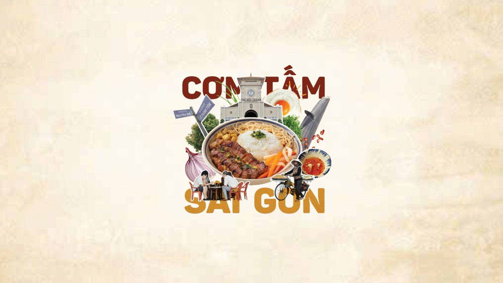

TP. Hồ Chí Minh

Ẩm Thực Sài Gòn: Hành Trình Khám Phá Hương Vị Nam Bộ Đậm Đà
Ẩm thực Sài Gòn (TP.HCM) là sự hội tụ tinh hoa ẩm thực ba miền với hương vị đặc trưng Nam Bộ - đậm đà, ngọt thanh và phóng khoáng. Hành trình khám phá ẩm thực Sài Thành chính là cách trải nghiệm nhịp sống sôi động và văn hóa đa dạng của thành phố này.
Top Các Món Ngon Sài Gòn "Phải Thử"
- Cơm Tấm - "Quốc Hồn Quốc Túy" Sài Thành: Cơm tấm là món ăn biểu tượng của Sài Gòn với hạt gạo tấm dẻo thơm, kết hợp cùng sườn nướng sốt mật ong đậm đà, bì heo giòn dai, chả trứng và đồ chua. Tất cả hòa quyện trong nước mắm ngọt đặc trưng.
Địa chỉ nổi tiếng: Cơm Tấm Cali (nhiều chi nhánh), Cơm Tấm Ba Ghiền (84 Đặng Văn Ngữ), Cơm Tấm Mậu Tâm (391 Nguyễn Trãi). - Hủ Tiếu - Tinh Hoa Của Nước Dùng: Hủ tiếu Sài Gòn có nhiều biến thể từ hủ tiếu Nam Vang, hủ tiếu mì đến hủ tiếu gõ. Điểm chung là nước dùng trong ngọt thanh từ xương heo hầm, sợi hủ tiếu dai mềm và nhiều loại topping phong phú.
Địa chỉ nổi tiếng: Hủ Tiếu Mì Sài Gòn (62C Nguyễn Văn Tráng), Hủ Tiếu Nam Vang Liên Hoa (312 Võ Văn Tần). - Bánh Mì Sài Gòn - Huyền Thoại Đường Phố: Bánh mì Sài Gòn với lớp vỏ giòn rụm, nhân pate thơm béo, thịt nguội, chả lụa và rau sống tươi ngon, kết hợp với nước sốt đặc biệt đã chinh phục toàn thế giới.
Địa chỉ nổi danh: Bánh Mì Huỳnh Hoa (26 Lê Thị Riêng), Bánh Mì Như Lan (50 Hàm Nghi). - Ốc - Văn Hóa Ẩm Thực Đêm Sài Gòn: Các quán ốc là nét văn hóa ẩm thực đường phố đặc sắc của Sài Gòn. Từ ốc len xào dừa, ốc mỡ cháy tỏi, ốc hương nướng mỡ hành đến các món nướng tiêu xanh... đều hấp dẫn khó cưỡng.
Khu vực nổi tiếng: Vĩnh Khánh (Quận 4), Lê Quang Sung (Quận 6), đường Trần Quốc Thảo (Quận 3).
Bí Quyết Thưởng Thức Ẩm Thực Sài Gòn Như Người Bản Địa
- Ăn Theo Khung Giờ: Sáng bằng cơm tấm, bánh mì; trưa với hủ tiếu, bún; tối lai rai hải sản, ốc.
- Khám Phá Ẩm Thực Đêm: Các quán ốc, lẩu, mì gõ về đêm mang trọn vẹn hương vị Sài Thành.
- Kết Hợp Đúng Cách: Ăn cơm tấm với nước mắm ngọt và đồ chua, thưởng thức bánh mì khi còn nóng giòn, dùng ốc với muối tiêu chanh.
Ẩm thực Sài Gòn là bức tranh đa sắc màu với những hương vị đậm đà khó quên. Hành trình khám phá từ những gánh hàng rong đến các quán ăn lâu đời sẽ mang đến cho bạn những trải nghiệm ẩm thực tuyệt vời nhất. Hãy bắt đầu chuyến phiêu lưu vị giác của bạn ngay hôm nay!